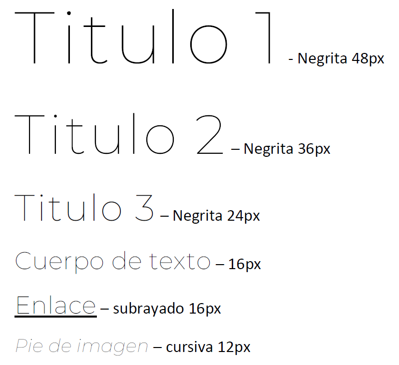

Design of a Library of Things Webpage
Research and Analysis
In the initial phase of the project, extensive research was conducted to evaluate existing Library of Things websites. This analysis aimed to identify best practices, user-friendly features, and design trends within the niche. Key insights from competitor websites were leveraged to inform our design decisions and make a content hierachy.
Wireframes
Following the research phase, wireframes were created to establish the basic structure and layout of the Library of Things website. The wireframes served as a blueprint for the user interface, ensuring a logical flow of information and optimal user experience.
Style Guide
A comprehensive style guide was developed to define the visual identity of the website. This included color schemes, typography choices, imagery guidelines, and other design elements. The style guide provided a cohesive framework for maintaining consistency throughout the entire project.

Mockups
Based on the wireframes and style guide, high-fidelity mockups were crafted to visualize the final look and feel of the Library of Things website. These mockups captured the user interface details, incorporating feedback from stakeholders to refine the design further.


Responsive HTML Version
To ensure a seamless user experience across devices, the final design was translated into a responsive HTML version. This involved implementing responsive design principles, optimizing images, and coding the website to adapt to various screen sizes. Thorough testing was conducted to validate the responsiveness of the site on different devices.